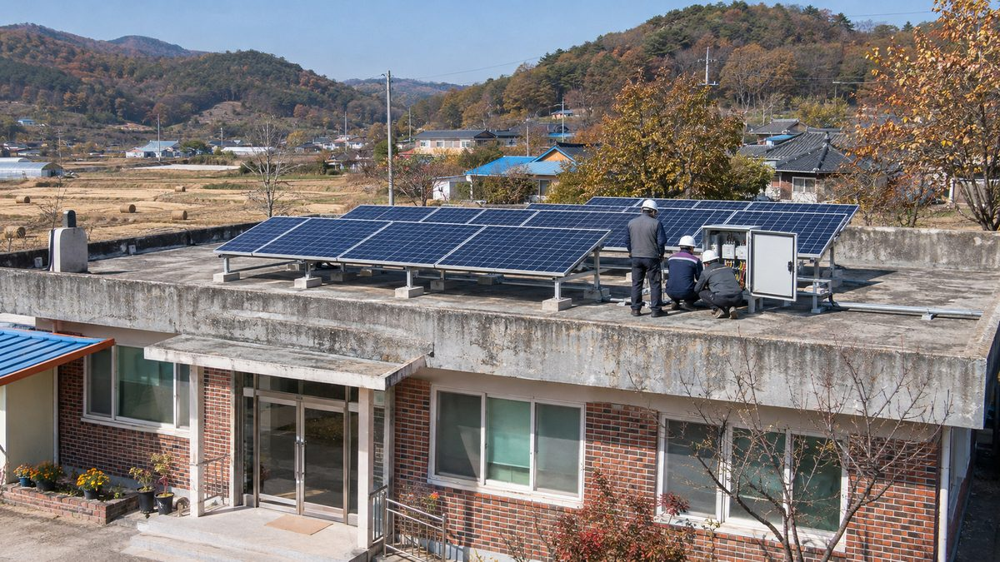

벌집·합선 방치된 경로당 옥상 태양광…경남 사회적협동조합이 점검 인력 솔라마스터 16명 길러

모두의경제 사회적협동조합, 올해 발전소 100곳 방문 점검 목표…2019년 설치된 창원 진동면 경로당 설비는 첫 전문가 점검, 지역 공공 에너지 관리 일자리로 키우자는 구상
경남의 한 사회적협동조합이 경로당·마을회관에 설치된 뒤 관리가 끊긴 소규모 태양광 설비를 찾아가 점검하는 인력 '솔라마스터'를 길러 현장에 내보내고 있다. 모두의경제 사회적협동조합이 운영하는 솔라마스터 교육 과정의 수료생은 모두 16명이며, 올해 사업은 태양광 발전소 100곳 방문 점검을 목표로 한다. 4일 창원시 마산합포구 진동면의 한 경로당에서는 수료생 4명과 민간 업체 전문가가 2019년 옥상에 설치된 뒤 처음 전문가 점검을 받는 설비를 살폈는데, 패널 각도와 정션박스, 인버터에 이어 설비 이상으로 전기요금이 다시 오르지 않았는지까지 확인했다. 여러 경로당을 돌아 온 김정환 솔라마스터는 모니터링 접속함 안에 벌집이 생긴 곳과, 설치한 지 반년 된 발전소 접속함에서 연결선이 빠진 채 녹아 부푼 합선 현장을 봤다고 전했다. 재생에너지 클라우드플랫폼 자료로 지난해 경남의 신규 발전소는 2,939곳으로 4년 전보다 73.6% 늘었으며, 한국에너지공단은 정부 지원 설비의 시공업체가 문을 닫으면 권역별 수리 전담업체를 이어 주는 고장 접수 창구를 운영하고 있다. 이경택 모두의경제 사회적협동조합 이사장은 설비 관리 기술이 지역의 새 일자리가 될 가능성이 충분하다며, 복지시설 정기 관리를 지자체 사업과 잇거나 햇빛소득마을·주민 에너지협동조합 운영을 돕는 방식으로 솔라마스터를 지역 공공 에너지 관리 일자리로 키워야 한다고 말했다.
시민에너지 관점
영국 런던의 지역 에너지 단체 리파워링 런던은 공공임대주택 지붕에 주민이 출자한 태양광을 올리면서 지역 청년들에게 설치·관리 교육을 해, 발전소와 일자리를 함께 만들어 왔다. 작은 설비마다 사람을 붙여 관리하면 비용이 많이 든다는 우려가 있을 수 있지만, 고장 난 채 버려진 패널은 전기요금을 줄여 주지도 못하고 화재 위험까지 키워 재생에너지에 대한 불신만 남긴다. 마을 발전소가 주민 소유로 오래 가려면 짓는 데서 끝나지 않고, 지역 사람이 관리하고 그 일로 소득을 얻는 구조가 함께 서야 한다. 정부와 지자체는 햇빛소득마을과 공공시설 태양광 예산에 사후 관리 인력 비용을 넣고, 이 관리 일을 지역 협동조합이 맡을 수 있는 길을 열어야 한다.
출처: 경남도민일보 2026-11-05 권민주 원문 보기
ハチの巣・ショートが放置された敬老堂の屋上太陽光…慶南の社会的協同組合が点検人材ソーラーマスター16人を育成
モドゥエ経済社会的協同組合、今年は発電所100カ所の訪問点検が目標…2019年設置の昌原・鎮東面の敬老堂設備は初の専門家点検、地域の公共エネルギー管理の雇用に育てる構想
慶尚南道の社会的協同組合が、敬老堂（高齢者の集会所）や村の会館に設置された後、管理が途絶えた小規模太陽光設備を訪ねて点検する人材「ソーラーマスター」を育て、現場に送り出している。モドゥエ経済社会的協同組合が運営するソーラーマスター教育課程の修了者は計16人で、今年の事業は太陽光発電所100カ所の訪問点検を目標としている。4日、昌原市馬山合浦区鎮東面のある敬老堂では、修了者4人と民間業者の専門家が、2019年に屋上に設置されて以来初めて専門家の点検を受ける設備を調べ、パネルの角度やジャンクションボックス、インバーターに加え、設備の異常で電気料金が再び上がっていないかまで確認した。各地の敬老堂を回ってきたキム・ジョンファン・ソーラーマスターは、監視用の接続箱の中にハチの巣ができていた現場や、設置から半年の発電所の接続箱で配線が外れたまま溶けて膨らんだショートの現場を見たと話した。再生可能エネルギー・クラウドプラットフォームの資料によると、昨年の慶南の新規発電所は2,939カ所で4年前より73.6%増え、韓国エネルギー公団は政府支援設備の施工業者が廃業した場合に圏域別の修理専門業者を紹介する故障受付窓口を運営している。イ・ギョンテク理事長は、設備管理の技術は地域の新たな雇用になる可能性が十分にあるとし、福祉施設の定期管理を自治体事業と結びつけたり、太陽光所得村や住民エネルギー協同組合の運営を支援したりする形で、ソーラーマスターを地域の公共エネルギー管理の雇用に育てるべきだと述べた。
市民エネルギーの視点
英国ロンドンの地域エネルギー団体リパワリング・ロンドンは、公営住宅の屋根に住民出資の太陽光を載せながら地域の若者に設置・管理の研修を行い、発電所と雇用を一緒に生み出してきた。小さな設備ごとに人を付けて管理すると費用がかさむとの懸念もありうるが、故障したまま放置されたパネルは電気料金を減らせないうえ火災の危険まで高め、再生可能エネルギーへの不信だけを残す。村の発電所が住民の所有として長続きするには、建てて終わりではなく、地域の人が管理し、その仕事で収入を得る仕組みが一緒に整わなければならない。政府と自治体は太陽光所得村や公共施設太陽光の予算に事後管理の人件費を盛り込み、この管理業務を地域の協同組合が担える道を開くべきだ。
出典: 慶南道民日報 2026-11-05 クォン・ミンジュ 原文を読む
敬老堂屋顶光伏蜂巢、短路无人管…庆南社会合作社培养16名太阳能大师巡检人员
Modu经济社会合作社今年目标走访巡检100座电站…昌原镇东面一处2019年安装的敬老堂设施首次接受专业检查，构想发展为地方公共能源管理岗位
庆尚南道一家社会合作社正在培养名为"太阳能大师"（Solar Master）的巡检人员，派他们走访敬老堂（老年活动中心）和村会馆在安装后便无人管理的小型光伏设施。Modu经济社会合作社开办的太阳能大师培训课程共有16人结业，今年的项目目标是走访巡检100座光伏电站。4日在昌原市马山合浦区镇东面的一处敬老堂，4名结业学员和民间企业专家检查了一套2019年装上屋顶后首次接受专业检查的设施，依次确认了光伏板角度、接线盒和逆变器，还查看了电费是否因设备故障而重新上涨。走访过多处敬老堂的太阳能大师Kim Jung-hwan介绍，曾见过监测接线箱里筑了蜂巢的现场，也见过一座安装仅半年的电站接线箱内连接线脱落、熔化鼓起的短路现场。根据可再生能源云平台的数据，去年庆南新增电站2,939座，比4年前增加73.6%；韩国能源公团设有故障受理窗口，在政府补贴设施的施工企业倒闭时为用户对接各区域的专职维修企业。合作社理事长Lee Kyung-taek表示，设备管理技术完全有可能成为地方的新就业岗位，应通过把福利设施定期管理与地方政府项目衔接，或支持阳光收入村和居民能源合作社运营等方式，把太阳能大师发展为地方公共能源管理岗位。
市民能源视角
英国伦敦的社区能源组织Repowering London在公共租赁住宅屋顶上建设居民出资的光伏，同时为当地青年提供安装和维护培训，把电站和就业一起做了起来。有人可能担心给每套小设施都配人管理成本太高，但坏了没人管的光伏板既省不了电费，还会加大火灾风险，最后只留下对可再生能源的不信任。村级电站要以居民所有的形式长久运行，就不能建完了事，还必须同时建立由当地人管理、并以此获得收入的结构。政府和地方政府应在阳光收入村和公共设施光伏的预算中列入后期管理人员费用，并为地方合作社承担这项管理工作开辟渠道。
来源: 庆南道民日报 2026-11-05 Kwon Min-ju 查看原文
Wasp nests and short circuits on neglected senior-centre rooftop solar: a Gyeongnam social cooperative trains 16 Solar Masters to inspect them
Modu Economy Social Cooperative aims to visit and inspect 100 plants this year; a senior-centre system installed in 2019 in Jindong-myeon, Changwon, got its first expert check, and the cooperative wants the work to become local public energy-management jobs
A social cooperative in South Gyeongsang Province is training inspectors it calls "Solar Masters" and sending them to small solar systems at senior centres and village halls that have gone unmaintained since installation. A total of 16 people have completed the Solar Master course run by Modu Economy Social Cooperative, and this year's programme aims to visit and inspect 100 solar plants. On Nov. 4 at a senior centre in Jindong-myeon, Masanhappo-gu, Changwon, four graduates and an expert from a private company examined a rooftop system getting its first professional inspection since it was installed in 2019, checking panel angles, junction boxes and the inverter, and even whether electricity bills had crept back up because of faults. Kim Jung-hwan, a Solar Master who has visited many senior centres, described finding a wasp nest inside a monitoring connection box and, at a plant only six months old, a short circuit where a loose wire had melted and swollen inside the box. According to the Renewable Energy Cloud Platform, 2,939 new power plants were added in South Gyeongsang last year, up 73.6% from four years earlier, and the Korea Energy Agency runs a fault-reporting desk that connects owners to regional repair contractors when the installer of a government-subsidised system goes out of business. Lee Kyung-taek, chair of the cooperative, said equipment maintenance skills could well become new local jobs, and that Solar Masters should grow into local public energy-management jobs by linking regular checks at welfare facilities to local government programmes or by supporting Sunlight Income Villages and resident energy cooperatives.
Citizen Energy View
In London, the community energy group Repowering London has put resident-financed solar on the roofs of council housing while training local young people to install and maintain it, creating power plants and jobs together. Some may worry that assigning people to look after every small system is too costly, but panels left broken cut no one's power bill, raise the risk of fire and leave only distrust of renewable energy behind. For village plants to last as resident-owned assets, building them is not the end: a structure in which local people maintain them and earn an income from that work has to be in place as well. Central and local governments should include aftercare staffing costs in budgets for Sunlight Income Villages and public-building solar, and open the way for local cooperatives to take on this maintenance work.
Source: Gyeongnam Domin Ilbo 2026-11-05 Kwon Min-ju Read the original